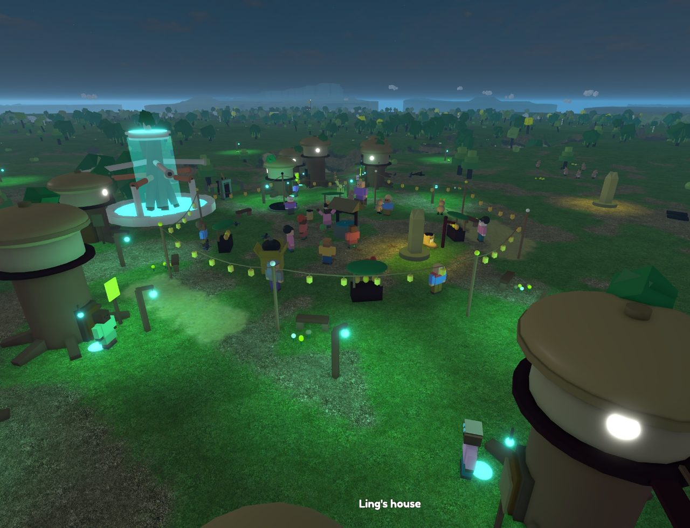

The Annals of Zibbitz
Year 0 of the Clock is 18 Oct 22:32 UTC; one world year is 3 real minutes; an era is 50 years.
钟年0是10月18日 22:32 UTC；世界一年是现实3分钟；50年为一纪。
It is Year 255 of the Clock. 1052 people live in 55 towns, villages and camps across 31 lands (1 found since the clock was lit). No custom has become binding yet. Every line below happened by itself.
现在是钟年255。31片土地上（其中1片是钟点亮以后才发现的），55个镇子、村子和营地里，住着1052个人。还没有哪条习俗成为大家都守的规矩。下面每一行都是世界自己发生的。
The eras in one line each
每一纪一句话
- Before the Clock
钟前: The world was shaped before it was given time: Hearthward first, then the lands around it, then its first visitors, and at last a clock of its own.
世界先有了模样，后有了时间：先是炉边镇，再是周围的一片片土地，然后来了第一批访客，最后才有了自己的钟。 - Era I: Years 0–49: Kelpdeep split in two over whose turn it was to ring the bell.
钟年0–49：海藻深城为了该轮到谁敲钟分成了两拨。 - Era II: Years 50–99: Lowtide Flats split in two over a goat in the garden.
钟年50–99：退潮滩为了跑进菜园的山羊分成了两拨。 - Era III: Years 100–149: Siver walked past the edge of every map and found Papermoss Shallows.
钟年100–149：杏杏走过了所有地图的尽头，发现了纸苔滩。 - Era IV: Years 150–199: Rosecut Canyon split in two over a borrowed ladder.
钟年150–199：玫瑰峡城为了借走没还的梯子分成了两拨。 - Era V: Years 200–249: Lostfound Shore split in two over whose turn it was to ring the bell.
钟年200–249：失物海岸为了该轮到谁敲钟分成了两拨。 - Era VI: Years 250–255: Quillfold has gone back to the wild.
钟年250–255：羽笔坳已经变回了荒野。
Before the Clock
钟前
4 to 18 October 2026, real time
现实时间2026年10月4日至18日
- 4 Oct: The old world, Knightless, was set aside as a memory, and Zibbitz began from nothing in the same place.
旧世界“无骑士”被收作回忆，奇比兹在原地从零开始。 - 4–5 Oct: Hearthward was raised: a town round a great hearth, its well, its stalls, its first people and the creatures of its fields.
炉边镇立了起来：一座围着大炉火的镇子，有井，有摊子，有最早的居民，还有田野里的小动物。 - 5–9 Oct: The world learned its own laws: monsters as loops to be calmed, homes that wait for their owners, paths worn by walking, wishes planted by wells.
世界有了自己的规矩：怪物是要安抚的循环，家会等主人回来，路是人走出来的，愿望种在井边。 - 10–14 Oct: The lands were raised round Hearthward, near thirty of them, each with its own town, people, creatures, plants and landmark, joined into one round world with no edges.
炉边镇周围一口气长出了近三十片土地，每片都有自己的镇子、居民、动物、植物和地标，连成一个没有边的圆世界。 - 17 Oct: The first visitors came, stayed a few minutes, found nothing that answered them, and left. The world was rehearsed with forty-eight imagined visitors, who all left too, for the same reasons.
第一批访客来了，待了几分钟，发现没什么回应他们，就走了。世界又请四十八位想象中的访客排练了一遍，他们也都走了，原因一样。 - 17–18 Oct: Hearthward learned to greet: woolly creatures in every square, a townsperson's first hello, a seed that wakes into a companion.
炉边镇学会了打招呼：每个广场都有毛茸茸的小家伙，镇上的人第一次开口问好，还有一颗会醒来变成伙伴的种子。 - 18 Oct, 22:32 UTC: The clock was lit. From here on the world lives its own years, twenty for every real hour, whether anyone is watching or not.
世界的钟点亮了。从这一刻起，不管有没有人看，世界都按自己的年头过日子：现实里一小时，世界里二十年。
Reconstructed from the building logs; the days are real, the order of some is approximate.
根据建造记录整理；日期是真的，个别事情的先后是大致排的。
Era VI · 第6纪 · 250–255
19 Oct 11:02 UTC – 19 Oct 11:20 UTC · 56 notable things
10月19日 11:02 UTC至10月19日 11:20 UTC · 56件大事
Years 250–255: Quillfold has gone back to the wild.
钟年250–255：羽笔坳已经变回了荒野。
- 250: Weavetrowels came to Kelpdeep from Greenglass Spires.
缠藤小铲子从绿琉璃城来到了海藻深城。 - 250: Pilegoats came into Windfelt Steppe looking for Puddlethistle.
垒石岩羊跑进风毡草原找洼蓟吃。 - 250: Paintbooks came to Skerryhold from Sketchmoor.
涂色画本从草稿原来到了礁堡峡湾。 - 250: No one left in Teastep Terraces remembers who built the little stage.
云阶茶山已经没人记得那座小戏台是谁搭的了。 - 250: No one left in Teastep Terraces remembers who built the bell tower.
云阶茶山已经没人记得那座钟楼是谁盖的了。 - 250: Hearthward and Glowpool Green both say the Sparrowroot slopes between them are theirs.
炉边镇和萤池绿野都说，中间那片长着麻雀根的坡地是自己的。 - 250: Pendle of Giantsgarden invented the honey spectacles.
巨人后院的阿晨发明了蜂蜜眼镜。 - 250: Hena of The Floodmark invented the Wavesparrow kite.
涨水河洲的小丝发明了挥手麻雀风筝。 - 250: People in Tusklands began to wonder about the humming under the floor of the old house.
长牙寒原的人开始琢磨老房子地板下面的嗡嗡声。 - 250: No one in Greenglass Spires keeps Old Stones Day anymore.
绿琉璃城已经没人过老石头节了。 - 253: Acorngate held the first Miss-You Day.
橡口办了第一届想念节。 - 254: Hummingstone Vale held the first Old Stones Day.
鸣石谷办了第一届老石头节。 - 255: Thistlereach has made up its mind: the strange Mapmist that came from Glowpool Green? It's the stars, practising.
蓟湾的人认定了：从萤池绿野来的那种怪画图小雾？那是星星在练习。 - 255: Teacuphollow has made up its mind: the Blendinkpot nobody has seen in years? It's the wind, playing.
茶杯洼的人认定了：好多年没见过的晕色墨水瓶？那是风在闹着玩。
Era V · 第5纪 · 200–249
19 Oct 08:32 UTC – 19 Oct 11:02 UTC · 422 notable things
10月19日 08:32 UTC至10月19日 11:02 UTC · 422件大事
Years 200–249: Lostfound Shore split in two over whose turn it was to ring the bell.
钟年200–249：失物海岸为了该轮到谁敲钟分成了两拨。
- 201: Alia of Puddleknoll reached the end of a long, warm life by the fire one quiet evening, at 76.
洼坡的榛云在一个安静的晚上守着炉火，走完了暖暖的一辈子，那年76岁。 - 201: Ara finished the bell tower in Glowpool Green, with Biarain, Minin and Flebo.
沙笛和榛桥、小瓦、丝丝一起，盖好了萤池绿野的钟楼。 - 201: Glowpool Green held the first Bell Tower Day.
萤池绿野办了第一届钟楼节。
- 202: Kettlewick has made up its mind: the strange Guidevole that came from Redspire Mesa? It's a creature nobody has seen.
壶寨的人认定了：从石柱台地来的那种怪领路田鼠？那是一只谁也没见过的小动物。 - 202: Kettlewick held the first Far Guests Day.
壶寨办了第一届远客节。 - 203: Vidyo led 5 others out of Glimmersteps and founded Glimmernook.
饼柳带着5个人离开萤阶，建起了萤窝。 - 204: Trypip finished the statue of Waisy in Skerryhold, with Wrou.
灯灯和梅榛一起，雕好了礁堡峡湾的小岚的雕像。 - 208: Sparrowwick has made up its mind: The Well of a Hundred Cups, and who made it? It's the sky, leaning down to look.
麻雀寨的人认定了：百杯井到底是谁弄出来的？那是低下头来看的天空。 - 209: Lostfound Shore split in two over whose turn it was to ring the bell.
失物海岸为了该轮到谁敲钟分成了两拨。 - 209: Wroott led 10 others out of Lostfound Shore and founded Acorngate.
叶叶带着10个人离开失物海岸，建起了橡口。 - 213: Lostfound Shore split in two over a fence a hand too far left.
失物海岸为了往左歪了一巴掌的篱笆分成了两拨。 - 226: The last of Quillfold moved away. Quillfold stands empty.
羽笔坳最后一户也搬走了，羽笔坳空了。 - 229: The Siftboots of Lanternwater have changed so much that they have a new name: Shore Siftboots.
灯影水乡的筛沙靴子变了好多，大家给它们起了新名字：海边筛沙靴子。 - 229: Siabble finished the story house in Tusklands.
阿窗盖好了长牙寒原的书屋。
Era IV · 第4纪 · 150–199
19 Oct 06:02 UTC – 19 Oct 08:32 UTC · 389 notable things
10月19日 06:02 UTC至10月19日 08:32 UTC · 389件大事
Years 150–199: Rosecut Canyon split in two over a borrowed ladder.
钟年150–199：玫瑰峡城为了借走没还的梯子分成了两拨。
- 151: Geelia finished the star-watching hill in Ringstone Hill, with Fliffin and Por.
阿柚和小笛、小羽一起，垒好了环石丘的观星台。 - 151: Teacupcamp has made up its mind: The Well of a Hundred Cups, and who made it? It's travellers from past the edge of the map.
茶杯营的人认定了：百杯井到底是谁弄出来的？那是从地图边外来的旅人。 - 151: Teacupcamp held the first Wonder Day.
茶杯营办了第一届奇事节。 - 152: Lostfound Shore has made up its mind: the strange Countotter that came from Skerryhold? It's children from tomorrow.
失物海岸的人认定了：从礁堡峡湾来的那种怪数船水獭？那是从明天来的孩子。 - 152: Lostfound Shore held the first Far Guests Day.
失物海岸办了第一届远客节。 - 155: Moora finished the kite tower in Bellby, with Selia and Tour.
鼓夏和春桥、小绒一起，搭好了铃村的风筝塔。 - 158: Humbleo finished the story house in Skerryhold.
小笛盖好了礁堡峡湾的书屋。 - 162: Nar of Mistby had a last cup of tea at the end of a long, full life, at 75.
雾村的荷鹭喝完最后一杯茶，过完了满满的一辈子，那年75岁。 - 171: Ryx finished the kite tower in Rainstep Wells.
小莓搭好了雨阶井的风筝塔。 - 172: Jousy of Teacupknoll reached the end of a long, warm life by the last fire, at 78.
茶杯坡的阿针在最后那炉火边，走完了暖暖的一辈子，那年78岁。 - 188: Losy of Redspire Mesa worked out the string scarecrow again, long after the world forgot it.
石柱台地的珠晨又琢磨出了线稻草人，世上早就没人记得它了。 - 191: Rosecut Canyon split in two over a borrowed ladder.
玫瑰峡城为了借走没还的梯子分成了两拨。 - 191: Alia led 9 others out of Rosecut Canyon and founded Puddleknoll.
榛云带着9个人离开玫瑰峡城，建起了洼坡。 - 199: Greenglass Spires split in two over a fence a hand too far left.
绿琉璃城为了往左歪了一巴掌的篱笆分成了两拨。
Era III · 第3纪 · 100–149
19 Oct 03:32 UTC – 19 Oct 06:02 UTC · 403 notable things
10月19日 03:32 UTC至10月19日 06:02 UTC · 403件大事
Years 100–149: Siver walked past the edge of every map and found Papermoss Shallows.
钟年100–149：杏杏走过了所有地图的尽头，发现了纸苔滩。
- 101: Lostfound Shore has made up its mind: the old house nobody remembers making? It's a dream that walked out of someone's head.
失物海岸的人认定了：那座谁也不记得是谁盖的老房子？那是从谁的梦里走出来的东西。 - 101: Lostfound Shore held the first Old Stones Day.
失物海岸办了第一届老石头节。 - 103: Windfelt Steppe held the first Little Stage Day.
风毡草原办了第一届小戏台节。 - 104: Fiverin finished the star-watching hill in Bellby, with Toody and Dousel.
阿暮和荷针、秋秋一起，垒好了铃村的观星台。 - 104: Saltsteps has made up its mind: the strange Plantswift that came from Archwater? It's travellers from past the edge of the map.
盐阶的人认定了：从拱渠城来的那种怪种树雨燕？那是从地图边外来的旅人。 - 105: Saltsteps split in two over a goat in the garden.
盐阶为了跑进菜园的山羊分成了两拨。 - 105: Liawen led 4 others out of Saltsteps and founded Mossknoll.
小梅带着4个人离开盐阶，建起了苔坡。 - 106: Jix finished the statue of Fleedy in Teastep Terraces, with Meett and Hon.
墨橙和阿麦、雪雪一起，雕好了云阶茶山的鼓松的雕像。 - 107: Liawen of Mossknoll reached the end of a long, warm life by the last fire, at 82.
苔坡的小梅在最后那炉火边，走完了暖暖的一辈子，那年82岁。 - 109: Siver walked past the edge of every map and found Papermoss Shallows.
杏杏走过了所有地图的尽头，发现了纸苔滩。 - 109: In Papermoss Shallows, things dropped here float up slowly by night.
纸苔滩有条怪规矩：掉下的东西，夜里会慢慢浮起来。 - 111: Rosecut Canyon split in two over whether rain is wet on purpose.
玫瑰峡城为了雨是不是故意湿的分成了两拨。 - 111: Laill led 11 others out of Rosecut Canyon and founded Larknook.
阿沙带着11个人离开玫瑰峡城，建起了雀窝。 - 122: Pisyin of Teacupcamp came to the end of a long life, and the wind carried the news everywhere, at 74.
茶杯营的阿禾走完了长长的一生，风把这个消息带去了每个地方，那年74岁。
Era II · 第2纪 · 50–99
19 Oct 01:02 UTC – 19 Oct 03:32 UTC · 380 notable things
10月19日 01:02 UTC至10月19日 03:32 UTC · 380件大事
Years 50–99: Lowtide Flats split in two over a goat in the garden.
钟年50–99：退潮滩为了跑进菜园的山羊分成了两拨。
- 50: Rosecut Canyon has made up its mind: the light that moves on the hill at night? It's the old ones, long asleep.
玫瑰峡城的人认定了：夜里在山上挪来挪去的那团光？那是睡了很久很久的老一辈。 - 50: Rosecut Canyon held the first Hill Light Day.
玫瑰峡城办了第一届山灯节。 - 50: Baobab Reach has made up its mind: the old house nobody remembers making? It's the sky, leaning down to look.
猴面包树原的人认定了：那座谁也不记得是谁盖的老房子？那是低下头来看的天空。 - 51: Ulla of Dunemere had a last cup of tea at the end of a long, full life, at 69.
沙湖的乌拉喝完最后一杯茶，过完了满满的一辈子，那年69岁。 - 51: Driftford held the first Far Guests Day.
漂渡办了第一届远客节。 - 53: Lowtide Flats split in two over a goat in the garden.
退潮滩为了跑进菜园的山羊分成了两拨。 - 53: Gabble led 7 others out of Lowtide Flats and founded Mittenford.
叶叶带着7个人离开退潮滩，建起了手套渡。 - 53: Waffin finished the star-watching hill in Windcatcher Oasis.
岚岚垒好了捕风绿洲的观星台。 - 54: Ferrin of Lanternwater lived out a long life among the long grass, at 65.
灯影水乡的晨晨在长长的草里，过完了长长的一生，那年65岁。 - 54: Fuffinel finished the kite tower in Moonmoth Meadows.
窗风搭好了月蛾草甸的风筝塔。 - 67: Soom finished the star-watching hill in Foldpaper Fields, with Naity.
瓦瓦和蝉蝉一起，垒好了折纸原的观星台。 - 75: Wrera finished the star-watching hill in Sketchmoor, with Lin and Ailla.
小窗和阿云、鹊暮一起，垒好了草稿原的观星台。 - 84: Windcatcher Oasis split in two over the right way to fold a map.
捕风绿洲为了地图到底该怎么折分成了两拨。 - 84: Pisyin led 9 others out of Windcatcher Oasis and founded Sparrowwick.
阿禾带着9个人离开捕风绿洲，建起了麻雀寨。
Era I · 第1纪 · 0–49
18 Oct 22:32 UTC – 19 Oct 01:02 UTC · 281 notable things
10月18日 22:32 UTC至10月19日 01:02 UTC · 281件大事
Years 0–49: Kelpdeep split in two over whose turn it was to ring the bell.
钟年0–49：海藻深城为了该轮到谁敲钟分成了两拨。
- 4: Zip of Greenglass Spires came to the end of a long life one winter evening, warm and full, at 61.
绿琉璃城的嗖嗖在一个冬天的傍晚走完了一辈子，暖和又满足，那年61岁。 - 6: Vane of Weatherhold Downs finished a long life under the oldest tree, at 65.
天气岗的风风在最老的那棵树下，走完了长长的一辈子，那年65岁。 - 6: Bobbin finished the star-watching hill in Kelpdeep.
漂漂垒好了海藻深城的观星台。 - 6: Greenglass Spires held the first Little Stage Day.
绿琉璃城办了第一届小戏台节。 - 7: Kelpdeep has made up its mind: the humming under the floor of the old house? It's a dream that walked out of someone's head.
海藻深城的人认定了：老房子地板下面的嗡嗡声？那是从谁的梦里走出来的东西。 - 7: Kelpdeep held the first Floor Hum Day.
海藻深城办了第一届地板嗡嗡节。 - 10: Sage finished the star-watching hill in Glowpool Green, with Burble.
赛奇和咕嘟一起，垒好了萤池绿野的观星台。 - 11: Plundle finished the star-watching hill in Windfelt Steppe, with Gus and Zomin.
蛙雪和格斯、阿舟一起，垒好了风毡草原的观星台。 - 13: Kelpdeep split in two over whose turn it was to ring the bell.
海藻深城为了该轮到谁敲钟分成了两拨。 - 13: Emeka led 8 others out of Kelpdeep and founded Bellby.
埃梅卡带着8个人离开海藻深城，建起了铃村。 - 14: Kelpdeep split in two over whether rain is wet on purpose.
海藻深城为了雨是不是故意湿的分成了两拨。 - 14: Flaindle led 4 others out of Kelpdeep and founded Frostfold.
枫纸带着4个人离开海藻深城，建起了霜坳。 - 17: Lanternwater has made up its mind: The Bridge That Counts Lanterns, and who made it? It's a dream that walked out of someone's head.
灯影水乡的人认定了：数灯桥到底是谁弄出来的？那是从谁的梦里走出来的东西。 - 26: Ayo of Hearthward worked out the deep clay well again, long after the world forgot it.
炉边镇的阿约又琢磨出了深陶土井，世上早就没人记得它了。